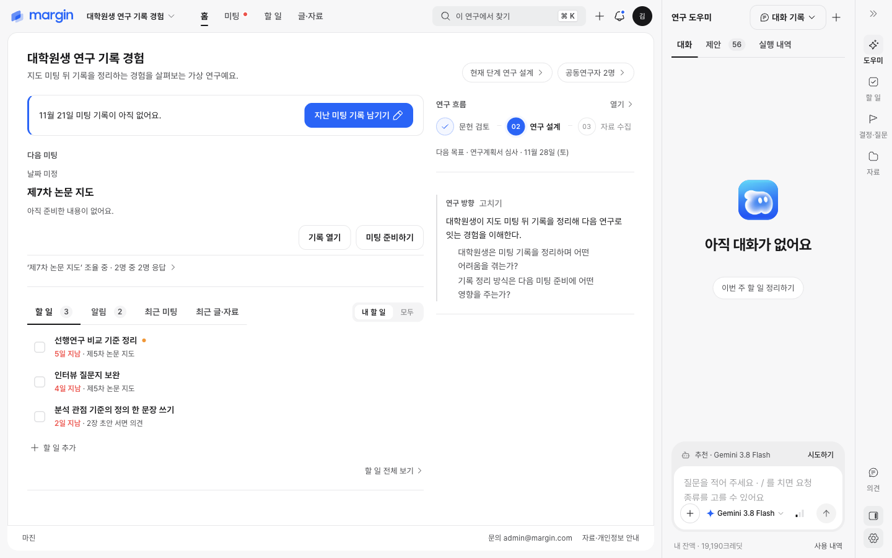
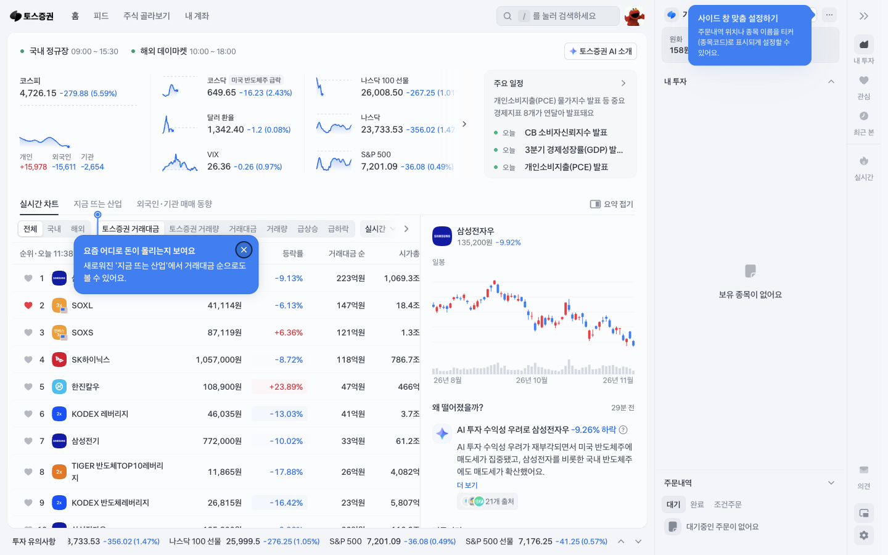

홈 화면은 이렇게 바뀌어요
실제 지금 화면 위에 바뀌는 부분만 덮어 그렸어요. 위 버튼으로 지금과 바뀐 뒤를 번갈아 눌러 보면 달라진 곳이 바로 보여요.

1날짜 미정
제7차 논문 지도
목표: 2장 비교 기준을 교수님과 확정하기 · 가져갈 할 일 3 · 글·자료 0 · 질문 0
다음 미팅에 가져갈 할 일
선행연구 비교 기준 정리 •
5일 지남제5차 논문 지도에서
인터뷰 질문지 보완
4일 지남제5차 논문 지도에서
분석 관점 기준의 정의 한 문장 쓰기
2일 지남2장 초안 서면 의견에서
남은 양 96%
4
함께하는 사람 1명 ›
- 다음 미팅 카드가 목표를 먼저 보여 줘요 정해짐 · 쟁점 2
아직 준비한 내용이 없어요.→ 첫 줄에 목표, 옆에 가져갈 할 일·글·자료·질문 수를 따로 세요. 목표만 적어도 '준비 없음'으로 보이던 문제를 없애요. - 할 일이 어느 미팅에서 나왔는지 칩으로 보여요 정해짐 · 쟁점 2·3
· 제5차 논문 지도→제5차 논문 지도에서칩. 첫 묶음 위에 '다음 미팅에 가져갈 할 일' 제목이 붙어요. 순서(정렬)는 그대로예요. - 크레딧을 숫자 대신 남은 비율로 보여요 정해짐 · 쟁점 5
내 잔액 · 19,190크레딧→ 남은 양 96% + 막대. 기준은 '이번 달 지급량 대비 남은 양'이에요. - '공동연구자 2명'을 '함께하는 사람 1명'으로 제안
지금은 나까지 세어 2명이에요. 나를 빼고 세고, 설정 탭 이름과 같은 말을 쓰자는 제안이에요. 정하실 것이라 점선으로 표시했어요.
그대로인 것: 오른쪽 레일(폭·버튼 배치), 1440px에서 사이드 창이 처음부터 열려 있는 것, 연구 흐름 칩. 홈 본문과 같은 탭(할 일)이 사이드 창에 뜨지 않게 하는 규칙(쟁점 3)은 지금 이 화면에서는 이미 지켜지고 있어요(사이드 창이 '도우미').
예시 값: 목표 문장과 가져갈 할 일 수 3, 남은 양 96%는 설명용 가상 값이에요.
참고한 화면: 토스증권
레일과 사이드 창의 골격을 이 화면에서 가져왔어요. 이 골격은 바꾸지 않기로 정했어요.
